flowchart LR
A[Data] --> B[Aesthetic Mappings]
B --> C[Geometric Objects]
C --> D[Statistical Transformations]
D --> E[Scales]
E --> F[Coordinate System]
F --> G[Facets]
G --> H[Theme]
H --> I[Final Plot]
5 Introduction to Data Visualization with ggplot2
5.1 Learning Objectives
By the end of this chapter, you will be able to:
- Understand the Grammar of Graphics philosophy and how ggplot2 implements it
- Create scatter plots, line plots, bar charts, histograms, box plots, and violin plots
- Map variables to aesthetic properties (color, size, shape, alpha)
- Apply and customize themes for publication-ready plots
- Add labels, titles, and customize scales
- Save plots with
ggsave()for different output formats - Choose the appropriate plot type for your data and research question
5.2 Introduction to the Grammar of Graphics
5.2.1 What is ggplot2?
ggplot2 is R’s most powerful and popular data visualization package. Created by Hadley Wickham, it implements Leland Wilkinson’s Grammar of Graphics — a systematic way to describe and build any visualization.
NoteWhy “gg”plot2?
- gg = Grammar of Graphics
- 2 = Second iteration (there was a ggplot1, but it’s obsolete)
The package is part of the tidyverse and integrates seamlessly with dplyr, tidyr, and other tidyverse tools.
5.2.2 The Grammar of Graphics Philosophy
Traditional plotting systems (like base R graphics) force you to choose from predefined plot types. The Grammar of Graphics takes a different approach: every visualization is built by combining independent components.
5.2.3 The Three Essential Components
Every ggplot2 plot requires three components:
- Data: A data frame or tibble
- Aesthetic mappings (
aes()): How variables map to visual properties (x, y, color, size, etc.) - Geometric objects (
geom_*()): The type of plot (points, lines, bars, etc.)
Basic syntax:
ggplot(data = <DATA>) +
aes(x = <X_VAR>, y = <Y_VAR>) +
geom_<TYPE>()Or more commonly:
ggplot(<DATA>, aes(x = <X_VAR>, y = <Y_VAR>)) +
geom_<TYPE>()
Importantggplot2 Uses
+, Not %>%
Notice we use + to add layers to a ggplot, NOT the pipe (%>% or |>). This is a common mistake!
# CORRECT
ggplot(data, aes(x = var1, y = var2)) +
geom_point()
# WRONG - don't use pipe!
ggplot(data, aes(x = var1, y = var2)) %>%
geom_point()5.2.4 Setup
Let’s load the necessary packages:
library(tidyverse) # Includes ggplot2, dplyr, etc.5.3 Your First ggplot: Scatter Plots with geom_point()
Scatter plots display the relationship between two continuous variables. Each observation is represented by a point.
5.3.1 Basic Scatter Plot
Let’s create example data on cattle feed intake and weight gain:
# Create example cattle data
cattle <- tibble(
animal_id = paste0("C", 1001:1030),
breed = rep(c("Holstein", "Jersey", "Angus"), each = 10),
feed_intake_kg = c(
rnorm(10, mean = 25, sd = 3), # Holstein
rnorm(10, mean = 18, sd = 2), # Jersey
rnorm(10, mean = 22, sd = 2.5) # Angus
),
weight_gain_kg = c(
rnorm(10, mean = 1.2, sd = 0.15), # Holstein
rnorm(10, mean = 0.8, sd = 0.12), # Jersey
rnorm(10, mean = 1.0, sd = 0.13) # Angus
)
)
# View first few rows
head(cattle)# A tibble: 6 × 4
animal_id breed feed_intake_kg weight_gain_kg
<chr> <chr> <dbl> <dbl>
1 C1001 Holstein 23.3 1.39
2 C1002 Holstein 24.0 1.17
3 C1003 Holstein 24.2 1.14
4 C1004 Holstein 19.4 0.991
5 C1005 Holstein 26.0 0.976
6 C1006 Holstein 23.5 1.16 # Create basic scatter plot
ggplot(cattle, aes(x = feed_intake_kg, y = weight_gain_kg)) +
geom_point()
Reading this code:
ggplot(cattle, ...)— Use the cattle dataaes(x = feed_intake_kg, y = weight_gain_kg)— Map feed intake to x-axis, weight gain to y-axisgeom_point()— Draw points
5.3.2 Adding Color by Group
We can map the breed variable to color:
ggplot(cattle, aes(x = feed_intake_kg, y = weight_gain_kg, color = breed)) +
geom_point()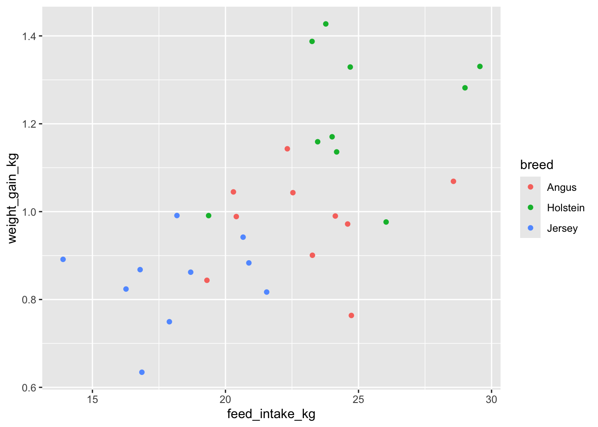
Notice: - Each breed gets a different color automatically - A legend is created automatically - Colors are chosen from a default palette
5.3.3 Customizing Point Aesthetics
Points have several aesthetic properties we can map to variables OR set manually:
| Aesthetic | What it controls | Example variable type |
|---|---|---|
x |
Horizontal position | Continuous |
y |
Vertical position | Continuous |
color |
Point outline color | Categorical or continuous |
size |
Point size | Continuous |
shape |
Point shape | Categorical |
alpha |
Transparency (0-1) | Continuous |
ImportantMapping vs Setting
Mapping (inside aes()): Connects a variable to an aesthetic — varies by data
aes(color = breed) # Color depends on breed variableSetting (outside aes()): Sets a fixed value for all points
geom_point(color = "blue", size = 3) # All points blue and size 35.3.3.1 Example: Mapping Size
# Map size to feed intake (redundant with x, but demonstrates the concept)
ggplot(cattle, aes(x = feed_intake_kg, y = weight_gain_kg,
color = breed, size = feed_intake_kg)) +
geom_point()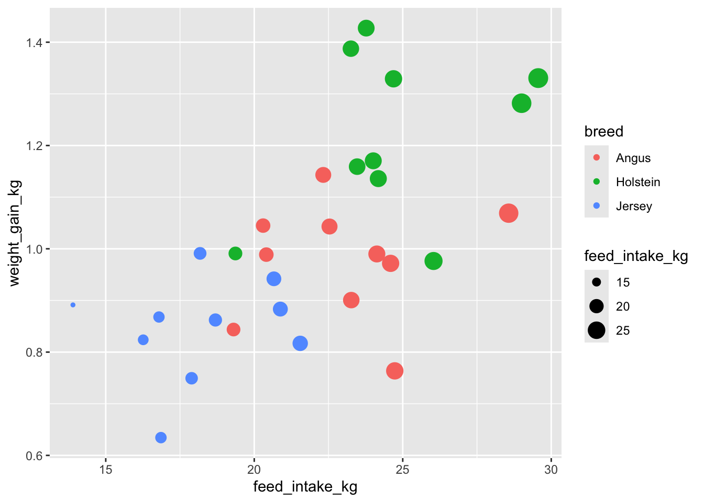
5.3.3.2 Example: Setting Fixed Aesthetics
# Make all points larger and semi-transparent
ggplot(cattle, aes(x = feed_intake_kg, y = weight_gain_kg, color = breed)) +
geom_point(size = 4, alpha = 0.6)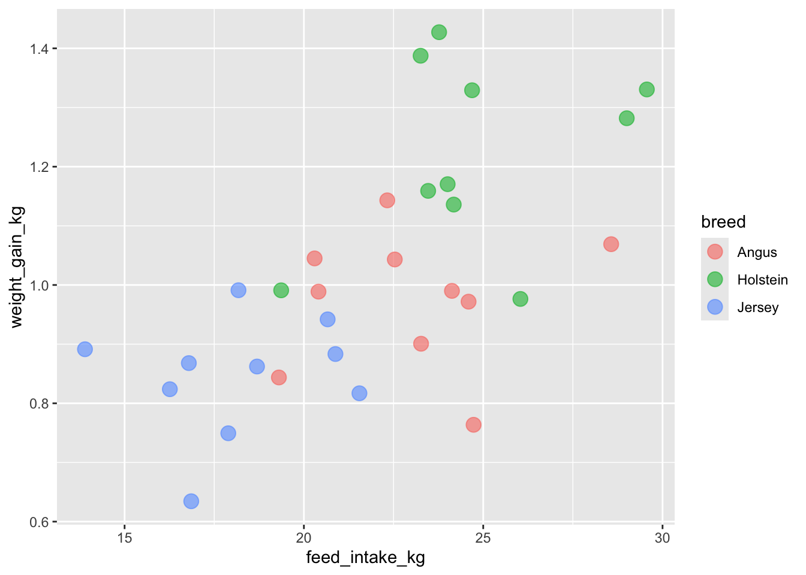
5.3.3.3 Example: Using Shape
# Map shape to breed (in addition to color)
ggplot(cattle, aes(x = feed_intake_kg, y = weight_gain_kg,
color = breed, shape = breed)) +
geom_point(size = 3)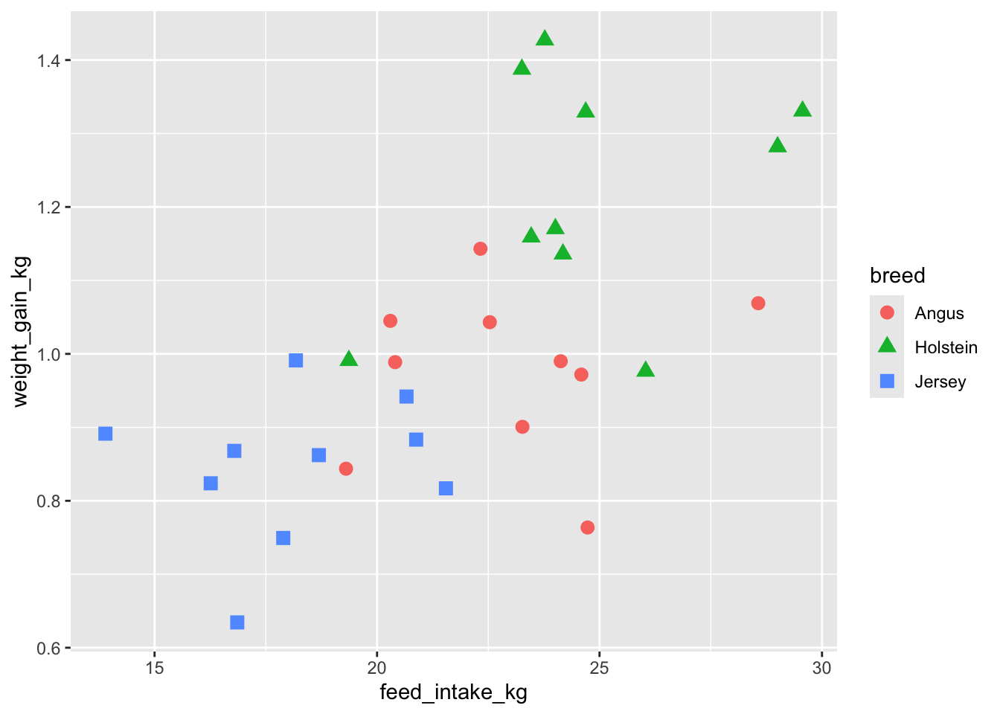
5.3.4 When to Use Scatter Plots
✅ Use scatter plots when: - You have two continuous variables - You want to explore relationships/correlations - You want to identify outliers or patterns - You want to show individual data points
❌ Don’t use scatter plots when: - One or both variables are categorical (use bar charts or box plots) - You have too many overlapping points (consider hex bins or contour plots) - You want to show change over time for a single entity (use line plots)
5.4 Line Plots with geom_line()
Line plots connect points in order, typically used for time series or sequential data.
5.4.1 Example: Growth Curves
# Create growth data for individual animals over time
growth <- tibble(
animal_id = rep(c("H001", "H002", "H003"), each = 6),
week = rep(c(0, 2, 4, 6, 8, 10), times = 3),
weight_kg = c(
c(45, 58, 72, 88, 105, 122), # H001
c(42, 55, 68, 83, 98, 115), # H002
c(48, 60, 75, 91, 108, 126) # H003
)
)
growth# A tibble: 18 × 3
animal_id week weight_kg
<chr> <dbl> <dbl>
1 H001 0 45
2 H001 2 58
3 H001 4 72
4 H001 6 88
5 H001 8 105
6 H001 10 122
7 H002 0 42
8 H002 2 55
9 H002 4 68
10 H002 6 83
11 H002 8 98
12 H002 10 115
13 H003 0 48
14 H003 2 60
15 H003 4 75
16 H003 6 91
17 H003 8 108
18 H003 10 126# Create line plot
ggplot(growth, aes(x = week, y = weight_kg, color = animal_id)) +
geom_line()
5.4.2 Combining Lines and Points
Often, it’s helpful to show both the line and the data points:
ggplot(growth, aes(x = week, y = weight_kg, color = animal_id)) +
geom_line() +
geom_point()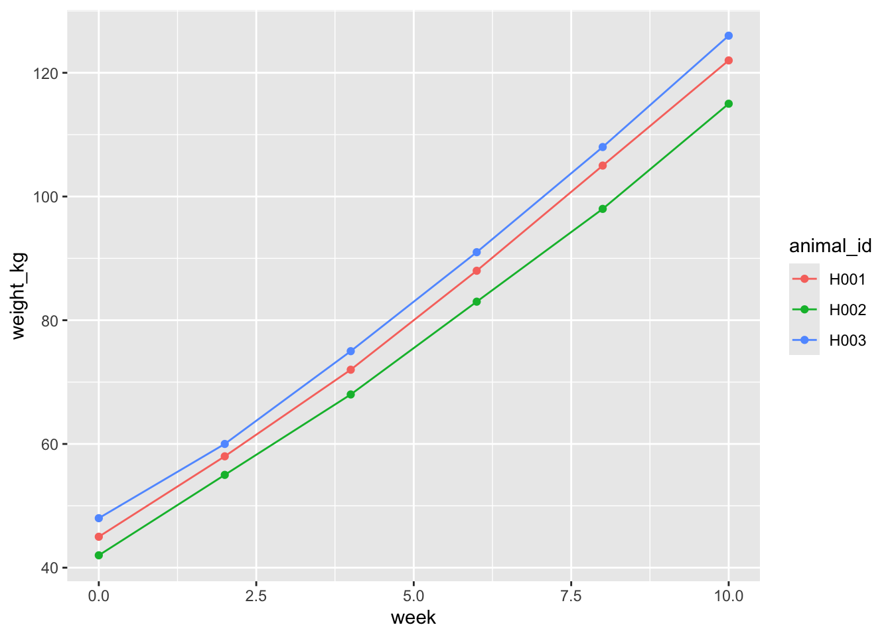
TipLayer Order Matters
Layers are drawn in the order you add them. Later layers appear on top of earlier layers.
# Points on top of lines (usually preferred)
geom_line() + geom_point()
# Lines on top of points (can obscure data)
geom_point() + geom_line()5.4.3 Customizing Lines
# Thicker lines with different line types
ggplot(growth, aes(x = week, y = weight_kg, color = animal_id)) +
geom_line(linewidth = 1.2) +
geom_point(size = 3)
5.4.4 When to Use Line Plots
✅ Use line plots when: - Data represents a sequence (especially time) - You want to show trends or changes - Points should be connected in a specific order - You’re tracking individual subjects over time
❌ Don’t use line plots when: - Data points are independent (no meaningful order) - You have many overlapping trajectories (hard to read) - X-axis is not continuous or sequential
5.5 Bar Charts with geom_col() and geom_bar()
Bar charts display categorical data with rectangular bars.
5.5.1 geom_col() vs geom_bar()
| Function | When to use | Y-axis comes from |
|---|---|---|
geom_col() |
You’ve already calculated the values | Your data |
geom_bar() |
You want to count occurrences | Automatic counting |
5.5.2 Using geom_col() with Pre-calculated Values
# Average milk production by breed (already summarized)
milk_production <- tibble(
breed = c("Holstein", "Jersey", "Guernsey", "Brown Swiss"),
avg_liters_per_day = c(35, 24, 28, 30)
)
milk_production# A tibble: 4 × 2
breed avg_liters_per_day
<chr> <dbl>
1 Holstein 35
2 Jersey 24
3 Guernsey 28
4 Brown Swiss 30# Create bar chart
ggplot(milk_production, aes(x = breed, y = avg_liters_per_day)) +
geom_col()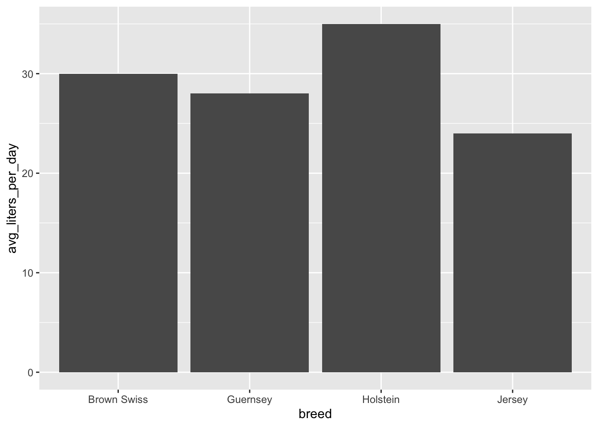
5.5.3 Using geom_bar() to Count
# Create dataset with individual animals
animals <- tibble(
breed = sample(c("Holstein", "Jersey", "Angus"), size = 100, replace = TRUE)
)
# Count animals per breed automatically
ggplot(animals, aes(x = breed)) +
geom_bar()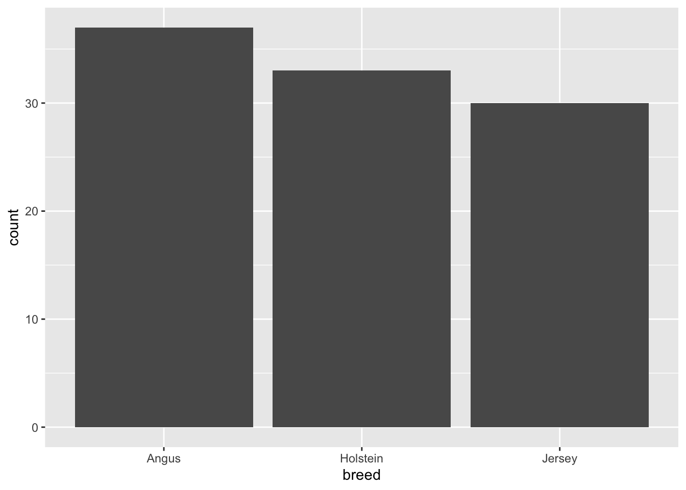
Note
geom_bar() Counts for You
When you use geom_bar(), you only specify x (the categorical variable). The y-axis (count) is calculated automatically using stat = "count".
5.5.4 Adding Color
# Color bars by breed
ggplot(milk_production, aes(x = breed, y = avg_liters_per_day, fill = breed)) +
geom_col()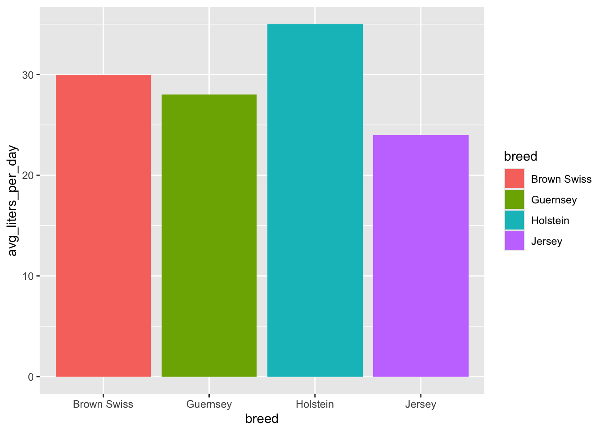
Important
color vs fill for Bars
colorcontrols the outline of the barfillcontrols the inside of the bar
Usually, you want fill for bar charts:
aes(fill = breed) # Fills the bars (typical)
aes(color = breed) # Just colors the outlines (usually not what you want)5.5.5 Grouped and Stacked Bars
# Create data with two categorical variables
feed_trial <- tibble(
breed = rep(c("Holstein", "Jersey"), each = 3),
feed_type = rep(c("A", "B", "C"), times = 2),
avg_gain_kg = c(1.2, 1.4, 1.1, 0.9, 1.0, 0.8)
)
feed_trial# A tibble: 6 × 3
breed feed_type avg_gain_kg
<chr> <chr> <dbl>
1 Holstein A 1.2
2 Holstein B 1.4
3 Holstein C 1.1
4 Jersey A 0.9
5 Jersey B 1
6 Jersey C 0.8# Grouped bars
ggplot(feed_trial, aes(x = breed, y = avg_gain_kg, fill = feed_type)) +
geom_col(position = "dodge")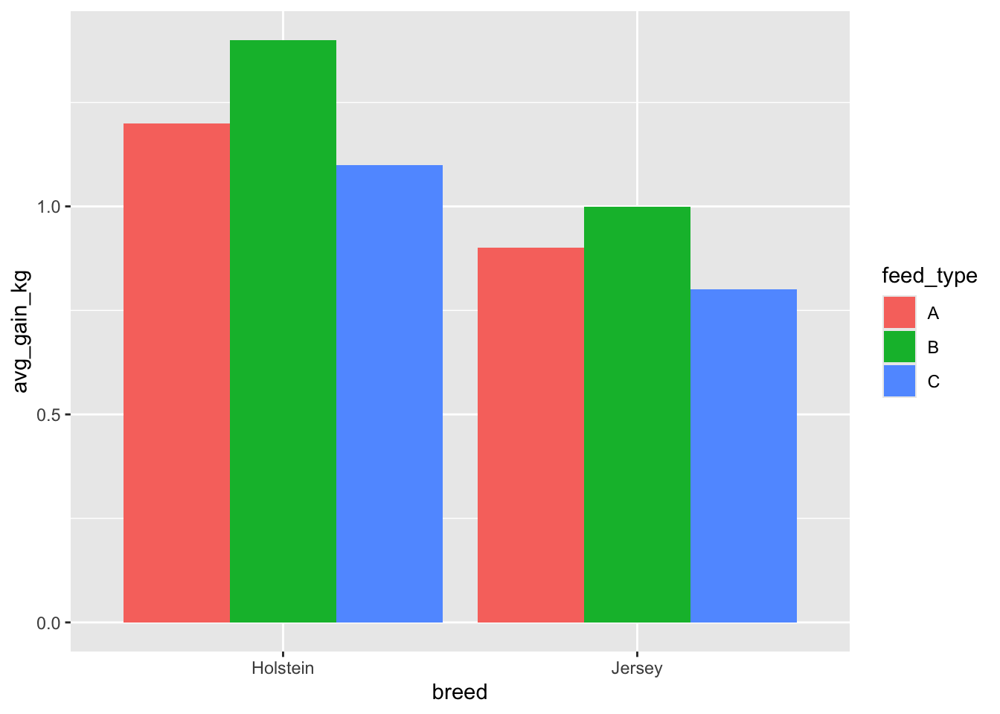
# Stacked bars (default)
ggplot(feed_trial, aes(x = breed, y = avg_gain_kg, fill = feed_type)) +
geom_col()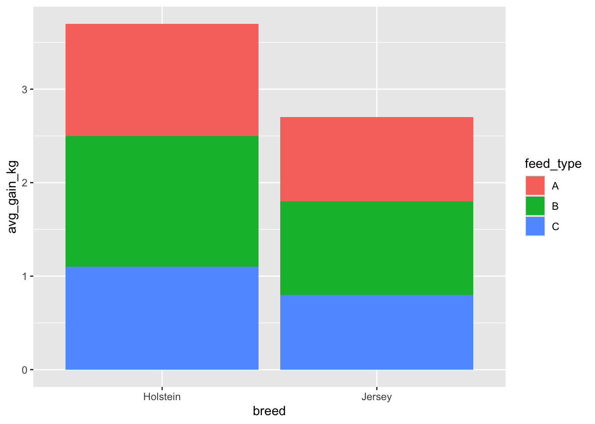
5.5.6 Horizontal Bars
# Use coord_flip() for horizontal bars
ggplot(milk_production, aes(x = breed, y = avg_liters_per_day)) +
geom_col() +
coord_flip()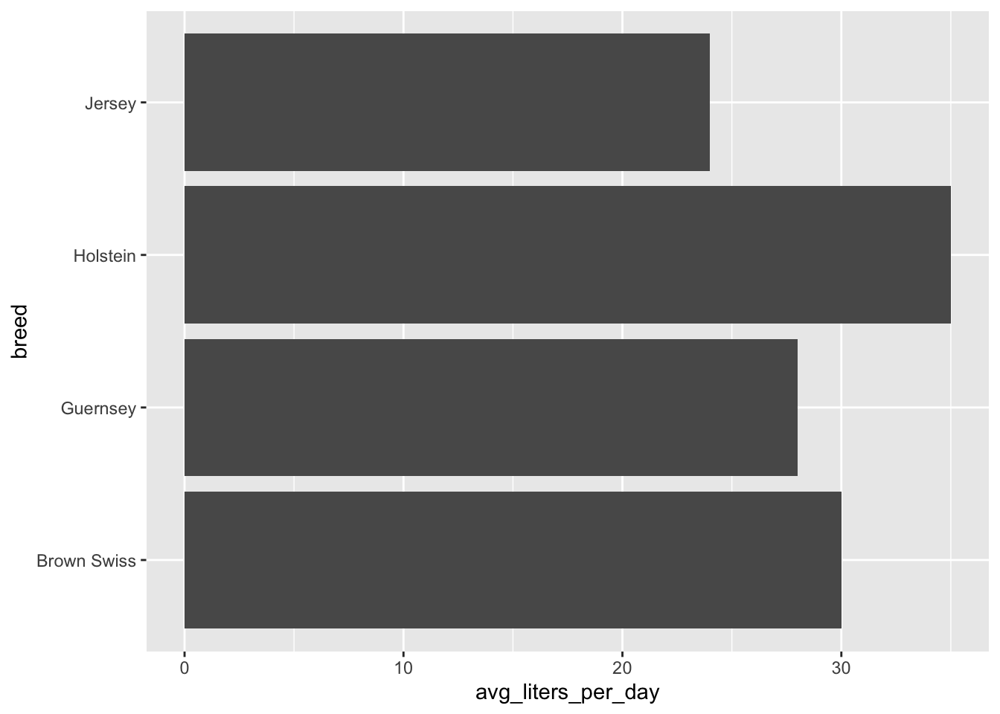
5.5.7 When to Use Bar Charts
✅ Use bar charts when: - Comparing quantities across categories - Showing counts or frequencies - Categories are on the x-axis - Bars should start at zero
❌ Don’t use bar charts when: - Showing distributions (use histograms) - Comparing many categories (can be hard to read) - Changes over time are important (use line plots)
5.6 Histograms with geom_histogram()
Histograms show the distribution of a single continuous variable by dividing the data into bins and counting how many observations fall into each bin.
5.6.1 Basic Histogram
# Create birth weight data
birth_weights <- tibble(
calf_id = 1:200,
birth_weight_kg = rnorm(200, mean = 40, sd = 5)
)
# Create histogram
ggplot(birth_weights, aes(x = birth_weight_kg)) +
geom_histogram()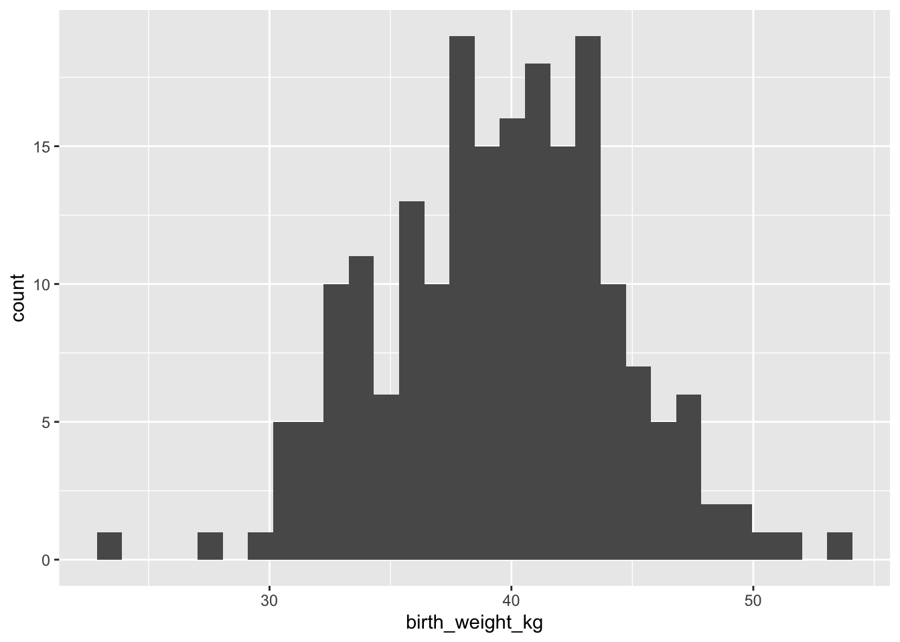
WarningPick the Right Number of Bins!
The default number of bins (30) may not be ideal for your data. Experiment with:
geom_histogram(bins = 20) # Specify number of bins
geom_histogram(binwidth = 2) # Specify width of each binToo few bins → lose detail; too many bins → noisy
5.6.2 Customizing Binwidth
# Wider bins (3 kg)
ggplot(birth_weights, aes(x = birth_weight_kg)) +
geom_histogram(binwidth = 3, fill = "steelblue", color = "white")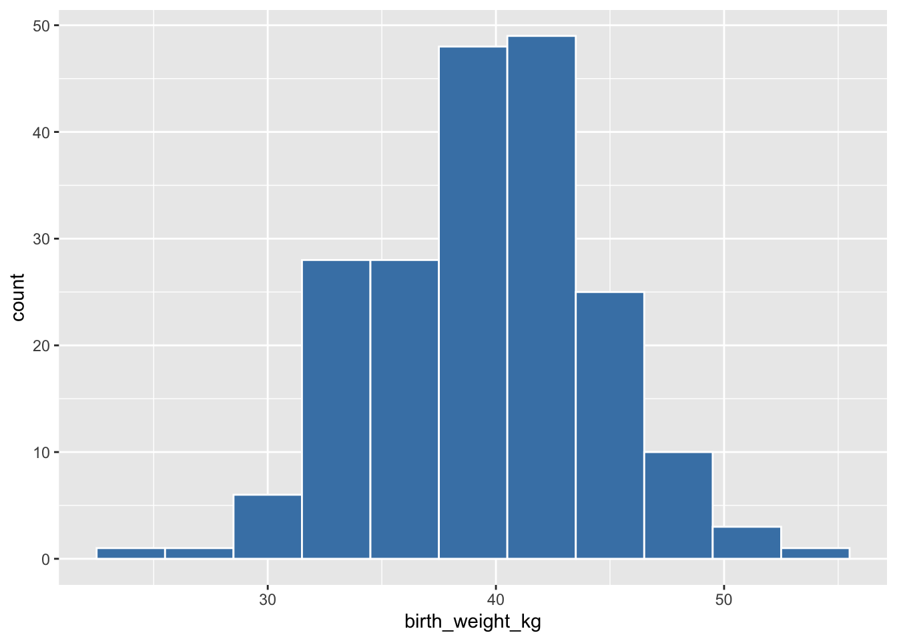
5.6.3 Overlapping Histograms by Group
# Create breed data with different distributions
set.seed(123)
breeds_vec <- sample(c("Holstein", "Jersey"), size = 200, replace = TRUE, prob = c(0.5, 0.5))
birth_weights_breed <- tibble(
breed = breeds_vec,
birth_weight_kg = ifelse(
breed == "Holstein",
rnorm(sum(breed == "Holstein"), mean = 42, sd = 5),
rnorm(sum(breed == "Jersey"), mean = 37, sd = 4)
)
)
# Overlapping histograms
ggplot(birth_weights_breed, aes(x = birth_weight_kg, fill = breed)) +
geom_histogram(binwidth = 2, alpha = 0.6, position = "identity")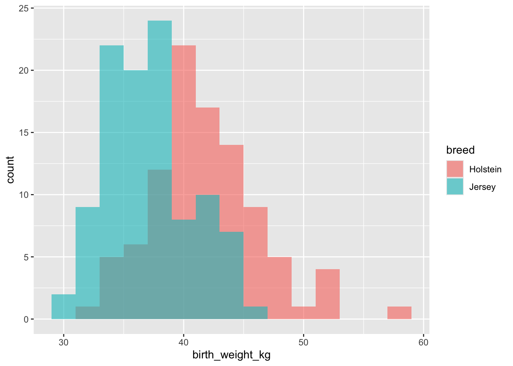
TipUse
alpha for Overlapping Histograms
When showing multiple distributions, use alpha (transparency) so you can see where they overlap:
geom_histogram(alpha = 0.5, position = "identity")position = "identity" places histograms on top of each other (default is stacked).
5.6.4 When to Use Histograms
✅ Use histograms when: - Showing the distribution of a continuous variable - Checking for normality - Identifying skewness or outliers - Understanding the shape of your data
❌ Don’t use histograms when: - You have categorical data (use bar charts) - Comparing multiple groups precisely (use box plots or density plots) - You have very few data points (distributions won’t be clear)
5.7 Box Plots with geom_boxplot()
Box plots (box-and-whisker plots) display the distribution of data through five summary statistics: minimum, first quartile (Q1), median, third quartile (Q3), and maximum.
5.7.1 Anatomy of a Box Plot
graph TD
A[Box Plot Components] --> B[Box: IQR Q1 to Q3]
A --> C[Line in box: Median]
A --> D[Whiskers: 1.5 × IQR]
A --> E[Points beyond whiskers: Outliers]
5.7.2 Basic Box Plot
# Create data for different treatment groups
treatments <- tibble(
treatment = rep(c("Control", "Drug A", "Drug B", "Drug C"), each = 25),
weight_gain_kg = c(
rnorm(25, mean = 50, sd = 8), # Control
rnorm(25, mean = 58, sd = 7), # Drug A
rnorm(25, mean = 62, sd = 9), # Drug B
rnorm(25, mean = 55, sd = 6) # Drug C
)
)
# Create box plot
ggplot(treatments, aes(x = treatment, y = weight_gain_kg)) +
geom_boxplot()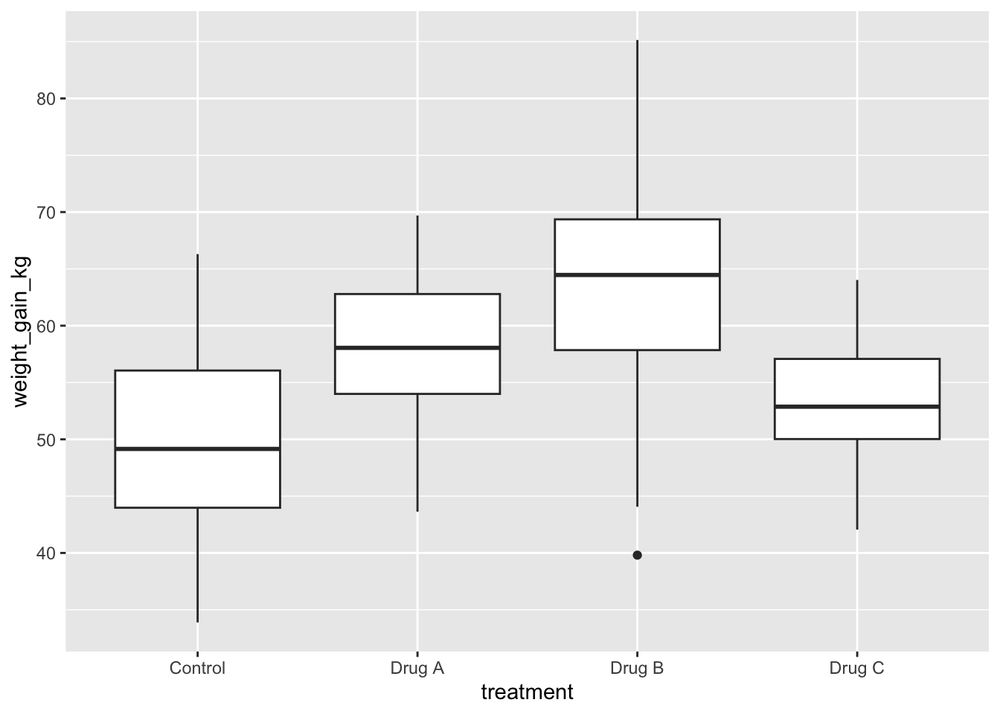
5.7.3 Adding Color
ggplot(treatments, aes(x = treatment, y = weight_gain_kg, fill = treatment)) +
geom_boxplot()
5.7.4 Combining Box Plots with Individual Points
It’s often useful to show the underlying data along with the box plot:
# Add jittered points
ggplot(treatments, aes(x = treatment, y = weight_gain_kg, fill = treatment)) +
geom_boxplot(alpha = 0.7) +
geom_jitter(width = 0.2, alpha = 0.5)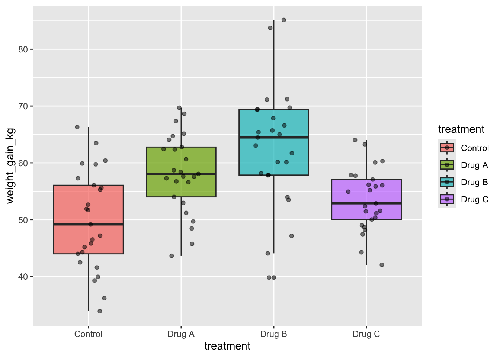
Tip
geom_jitter() Reduces Overplotting
When points overlap, geom_jitter() adds small random horizontal noise to make them visible:
geom_jitter(width = 0.2) # Jitter horizontally (adjust width as needed)5.7.5 When to Use Box Plots
✅ Use box plots when: - Comparing distributions across groups - You want to show median, quartiles, and outliers - You have multiple groups to compare - You want a compact summary of distributions
❌ Don’t use box plots when: - Your data has multiple modes (bimodal, multimodal) — box plots hide this - You have very few data points (< ~10 per group) - You want to show exact distributions (use violin plots or histograms)
5.8 Violin Plots with geom_violin()
Violin plots show the full distribution of data (like a density plot) rotated and mirrored. They’re useful for showing distributions that box plots might hide.
5.8.1 Basic Violin Plot
ggplot(treatments, aes(x = treatment, y = weight_gain_kg, fill = treatment)) +
geom_violin()
5.8.2 Combining Violin Plots with Box Plots
A powerful combination: violin plot shows distribution, box plot shows summary statistics:
ggplot(treatments, aes(x = treatment, y = weight_gain_kg, fill = treatment)) +
geom_violin(alpha = 0.5) +
geom_boxplot(width = 0.2, fill = "white")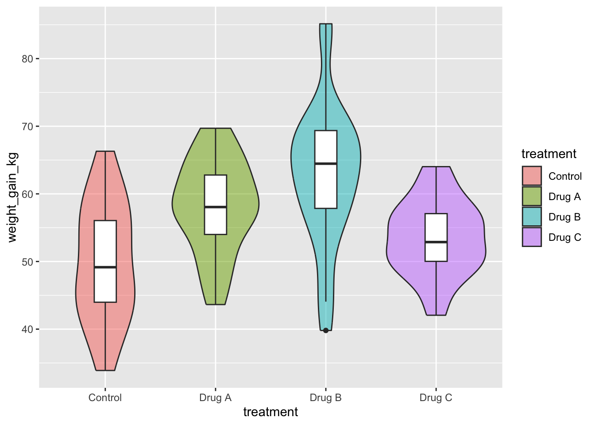
5.8.3 Adding Points
ggplot(treatments, aes(x = treatment, y = weight_gain_kg, fill = treatment)) +
geom_violin(alpha = 0.5) +
geom_jitter(width = 0.1, alpha = 0.3, size = 1)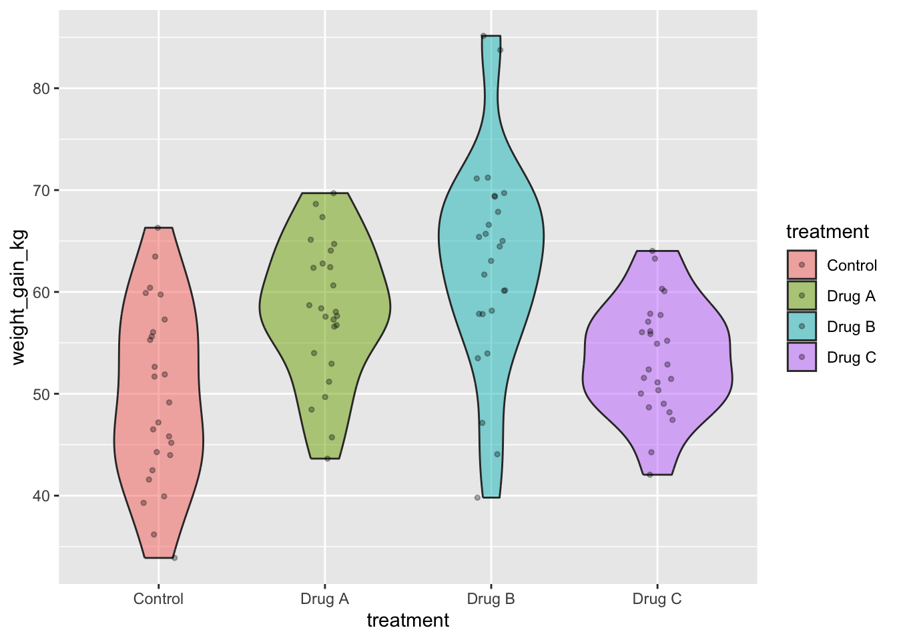
5.8.4 When to Use Violin Plots
✅ Use violin plots when: - You want to show full distribution shape - Your data might be bimodal or have multiple peaks - Comparing distributions across groups - You have enough data points (> ~20 per group)
❌ Don’t use violin plots when: - You have very few data points (distributions won’t be smooth) - Readers aren’t familiar with violin plots (less intuitive than box plots) - You only need summary statistics (use box plots)
5.9 Aesthetic Mappings: A Deeper Dive
We’ve seen several aesthetics already. Let’s consolidate what we know:
5.9.1 Common Aesthetics
| Aesthetic | Type | Example | Best used with |
|---|---|---|---|
x |
Position | aes(x = treatment) |
All geoms |
y |
Position | aes(y = weight) |
All geoms |
color |
Color | aes(color = breed) |
Points, lines, text |
fill |
Fill | aes(fill = breed) |
Bars, boxes, violins |
size |
Size | aes(size = age) |
Points, text |
shape |
Shape | aes(shape = sex) |
Points |
alpha |
Transparency | aes(alpha = density) |
All geoms |
linetype |
Line type | aes(linetype = group) |
Lines |
5.9.2 Continuous vs Discrete Variables
ggplot2 handles continuous and discrete variables differently:
# Create data with both variable types
mixed_data <- tibble(
group = rep(c("A", "B", "C"), each = 20), # Discrete
score = rnorm(60, mean = 100, sd = 15), # Continuous
intensity = rep(1:20, times = 3) # Continuous
)
# Color by discrete variable (gets distinct colors)
ggplot(mixed_data, aes(x = intensity, y = score, color = group)) +
geom_point(size = 3)
# Color by continuous variable (gets gradient)
ggplot(mixed_data, aes(x = intensity, y = score, color = intensity)) +
geom_point(size = 3)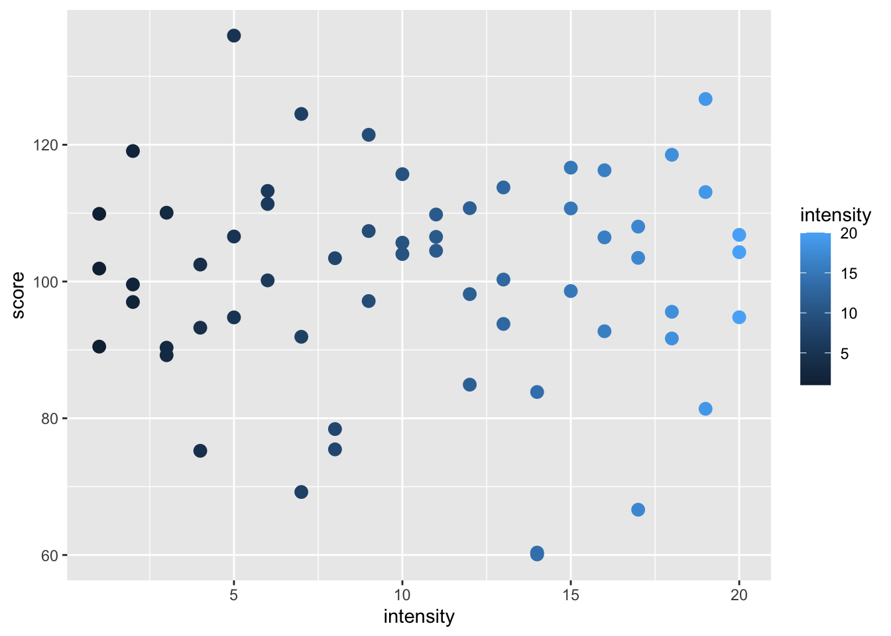
ImportantChoosing the Right Aesthetic
- Categorical data: Use
color,fill,shape,linetype - Continuous data: Use
x,y,size,alpha,color(gradient) - Too many categories? (> ~7): Don’t use
shape(hard to distinguish); consider faceting instead
5.10 Working with Scales
Scales control how data values map to visual properties. Every aesthetic has a scale.
5.10.1 Scale Functions
Scale functions follow the pattern: scale_<aesthetic>_<type>()
Examples: - scale_x_continuous() — Continuous x-axis - scale_y_log10() — Log10 transform y-axis - scale_color_manual() — Manually specify colors - scale_fill_brewer() — Use ColorBrewer palettes
5.10.2 Modifying Continuous Scales
# Create sample data
growth_rate <- tibble(
animal_id = 1:30,
weight_kg = runif(30, min = 400, max = 700),
gain_per_day_kg = runif(30, min = 0.8, max = 1.5)
)
# Modify axis limits and breaks
ggplot(growth_rate, aes(x = weight_kg, y = gain_per_day_kg)) +
geom_point() +
scale_x_continuous(limits = c(350, 750), breaks = seq(350, 750, by = 100)) +
scale_y_continuous(limits = c(0, 2), breaks = seq(0, 2, by = 0.5))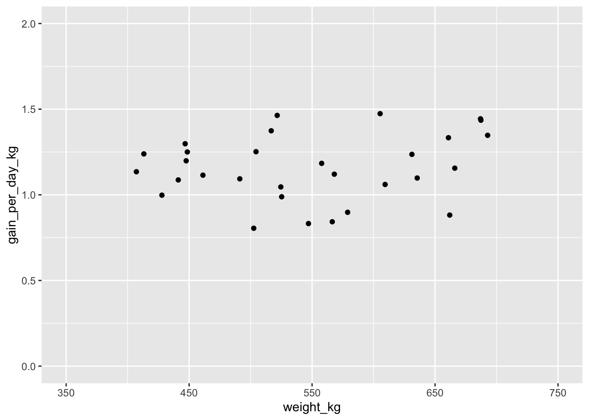
5.10.3 Log Transformations
# Data with exponential relationship
bacteria <- tibble(
time_hours = 0:24,
count = 100 * 2^(0:24 / 4) # Exponential growth
)
# Regular scale (hard to see early values)
ggplot(bacteria, aes(x = time_hours, y = count)) +
geom_line() +
geom_point()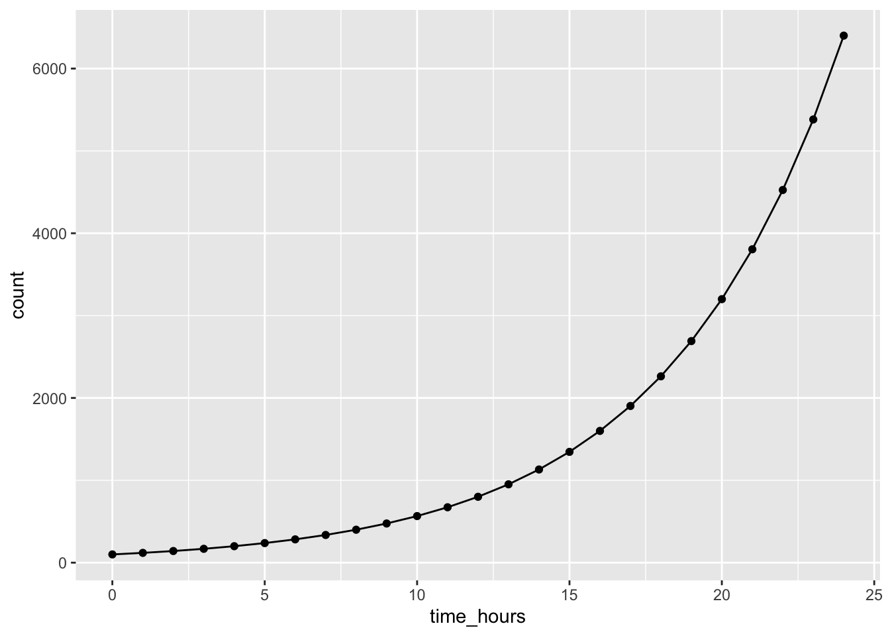
# Log scale (easier to see pattern)
ggplot(bacteria, aes(x = time_hours, y = count)) +
geom_line() +
geom_point() +
scale_y_log10()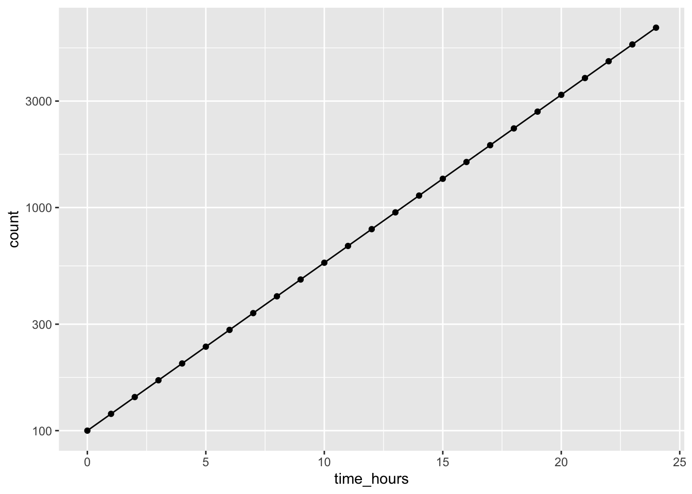
5.10.4 Discrete Scales: Manual Colors
# Specify custom colors
ggplot(cattle, aes(x = feed_intake_kg, y = weight_gain_kg, color = breed)) +
geom_point(size = 3) +
scale_color_manual(values = c("Holstein" = "blue",
"Jersey" = "orange",
"Angus" = "darkred"))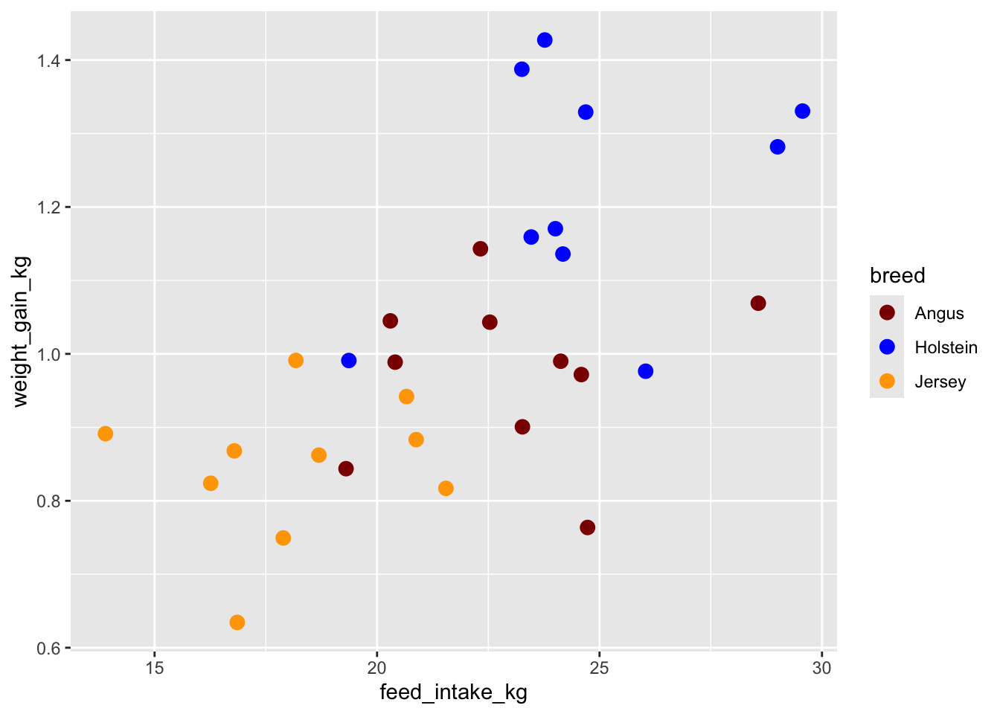
5.10.5 Using ColorBrewer Palettes
# Use ColorBrewer palette (colorblind-friendly)
ggplot(cattle, aes(x = feed_intake_kg, y = weight_gain_kg, color = breed)) +
geom_point(size = 3) +
scale_color_brewer(palette = "Set1")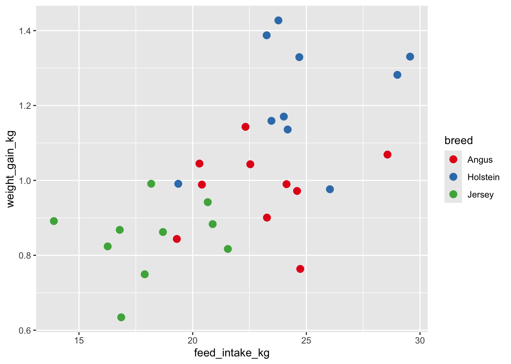
TipColorblind-Friendly Palettes
Use scale_color_viridis_d() (discrete) or scale_color_viridis_c() (continuous) for accessible colors:
scale_color_viridis_d() # Discrete variable
scale_color_viridis_c() # Continuous variable5.11 Labels and Titles with labs()
Use labs() to add or modify plot labels:
ggplot(cattle, aes(x = feed_intake_kg, y = weight_gain_kg, color = breed)) +
geom_point(size = 3) +
labs(
title = "Relationship Between Feed Intake and Weight Gain",
subtitle = "Data from 30 cattle across three breeds",
x = "Daily Feed Intake (kg)",
y = "Daily Weight Gain (kg)",
color = "Breed",
caption = "Source: Fictional farm data (2024)"
)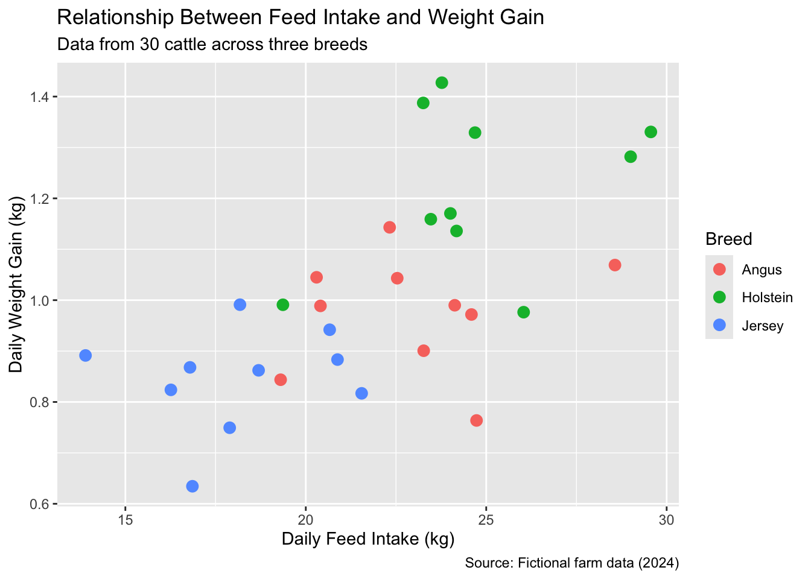
NoteLabel Arguments in
labs()
title— Main plot titlesubtitle— Secondary title (smaller font)x,y— Axis labelscolor,fill,shape,size— Legend titles (match the aesthetic name)caption— Small text at bottom (often for data source or notes)
5.12 Themes: Customizing Plot Appearance
Themes control the non-data elements of your plot (background, grid lines, fonts, etc.).
5.12.1 Built-in Themes
ggplot2 includes several complete themes:
# Create base plot
p <- ggplot(cattle, aes(x = feed_intake_kg, y = weight_gain_kg, color = breed)) +
geom_point(size = 3) +
labs(title = "Feed Intake vs Weight Gain")
# Default theme (theme_gray)
p
# theme_minimal() - Clean and modern
p + theme_minimal()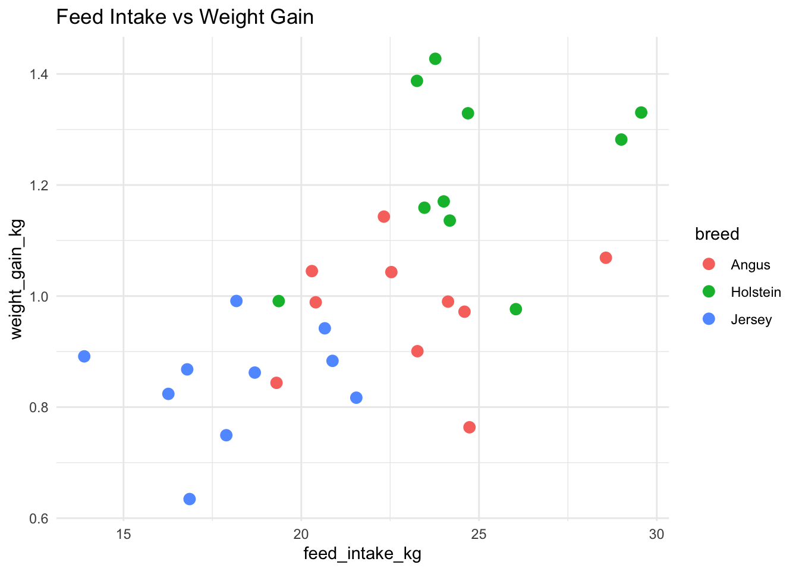
# theme_classic() - No grid lines
p + theme_classic()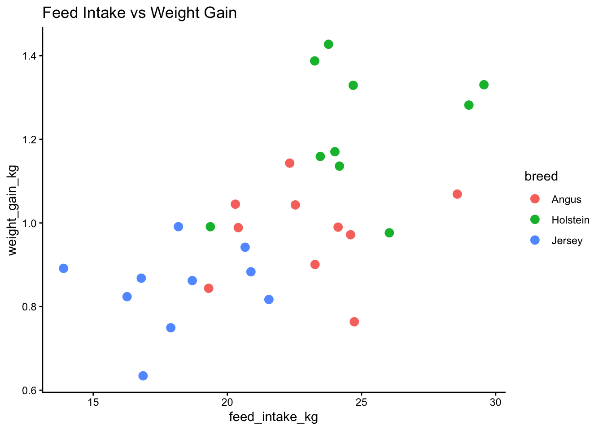
# theme_bw() - Black and white
p + theme_bw()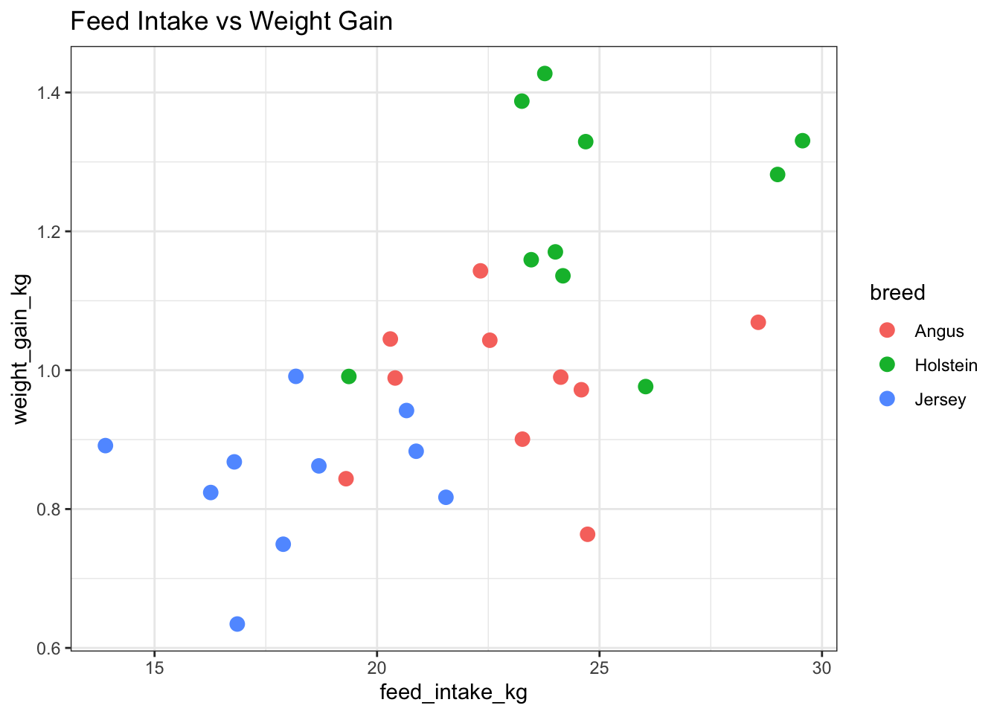
# theme_light() - Light gray grid
p + theme_light()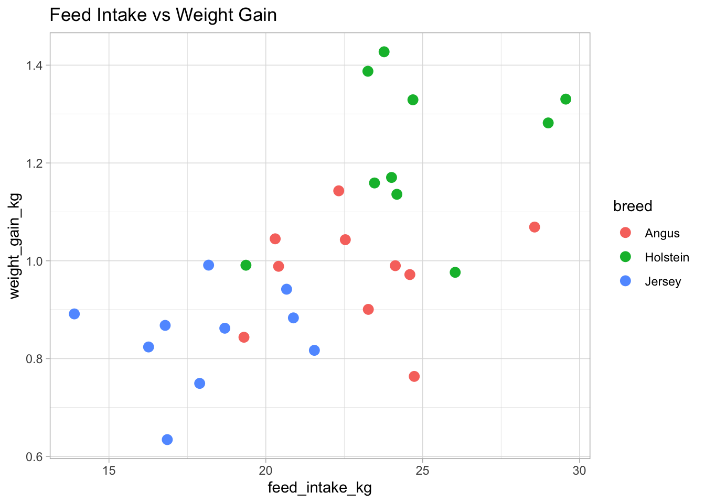
5.12.2 Setting a Default Theme
You can set a theme for all plots in your session:
# Set default theme for all subsequent plots
theme_set(theme_minimal())5.12.3 Customizing Themes
Use theme() to modify specific elements:
ggplot(cattle, aes(x = feed_intake_kg, y = weight_gain_kg, color = breed)) +
geom_point(size = 3) +
labs(title = "Feed Intake vs Weight Gain") +
theme_minimal() +
theme(
plot.title = element_text(size = 16, face = "bold"),
axis.title = element_text(size = 12),
legend.position = "bottom"
)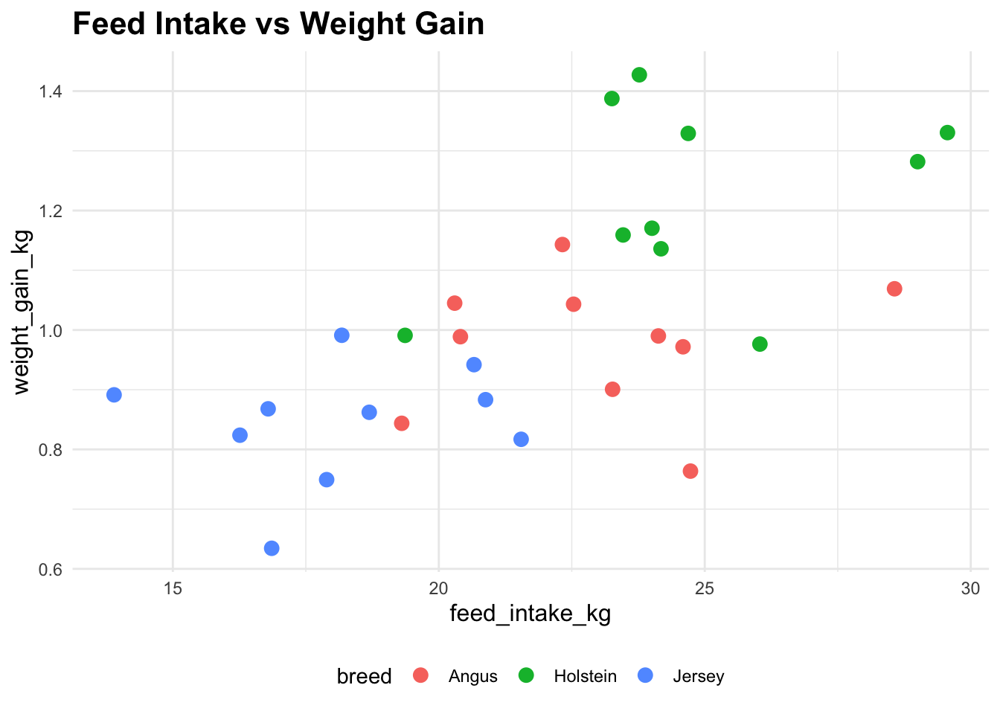
TipCommon Theme Customizations
theme(
plot.title = element_text(size = 16, face = "bold"),
axis.text = element_text(size = 10),
legend.position = "bottom", # or "top", "left", "right", "none"
panel.grid.major = element_line(color = "gray90"),
panel.grid.minor = element_blank()
)5.13 Coordinate Systems
Coordinate systems control how the x and y axes are rendered.
5.13.1 coord_cartesian(): Zooming
coord_cartesian() is useful for zooming without removing data:
# Zoom in on a specific region
ggplot(cattle, aes(x = feed_intake_kg, y = weight_gain_kg, color = breed)) +
geom_point(size = 3) +
coord_cartesian(xlim = c(18, 26), ylim = c(0.8, 1.2))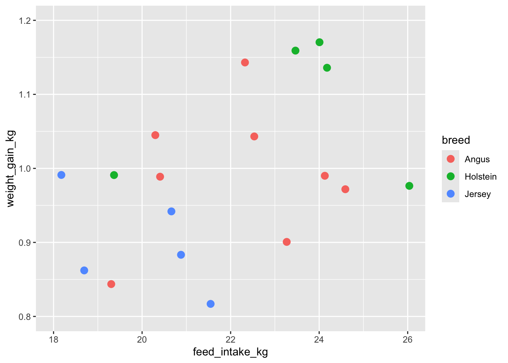
Important
coord_cartesian() vs scale_*_continuous(limits = ...)
coord_cartesian(xlim = c(a, b))— Zooms without removing data (stat calculations use all data)scale_x_continuous(limits = c(a, b))— Removes data outside limits before plotting
Usually, you want coord_cartesian() for zooming.
5.13.2 coord_flip(): Horizontal Plots
We saw this earlier with bar charts. It swaps x and y:
ggplot(milk_production, aes(x = breed, y = avg_liters_per_day)) +
geom_col(fill = "steelblue") +
coord_flip()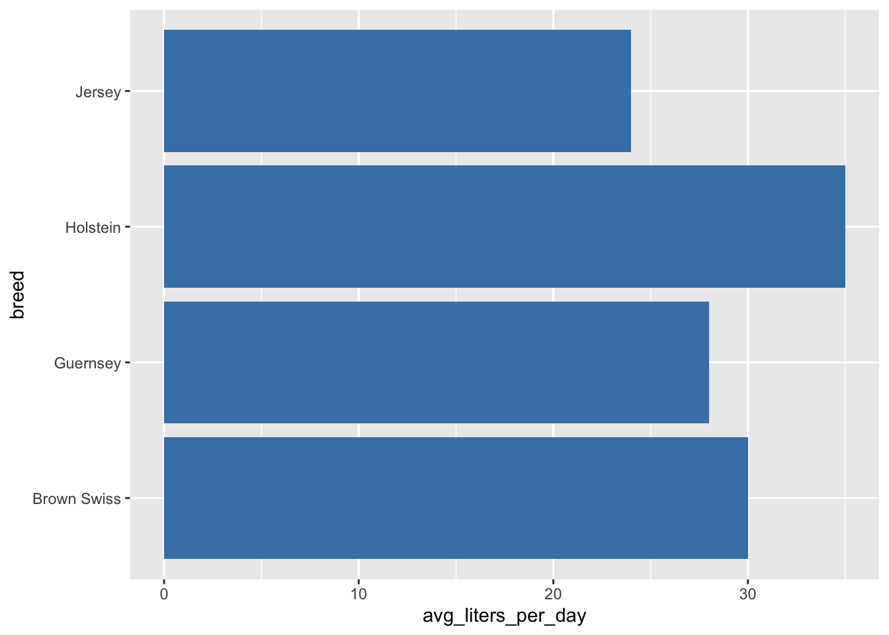
5.13.3 Fixed Aspect Ratio
coord_fixed() ensures equal scales on both axes (1 unit on x = 1 unit on y visually):
# Without fixed aspect ratio
ggplot(cattle, aes(x = feed_intake_kg, y = weight_gain_kg)) +
geom_point()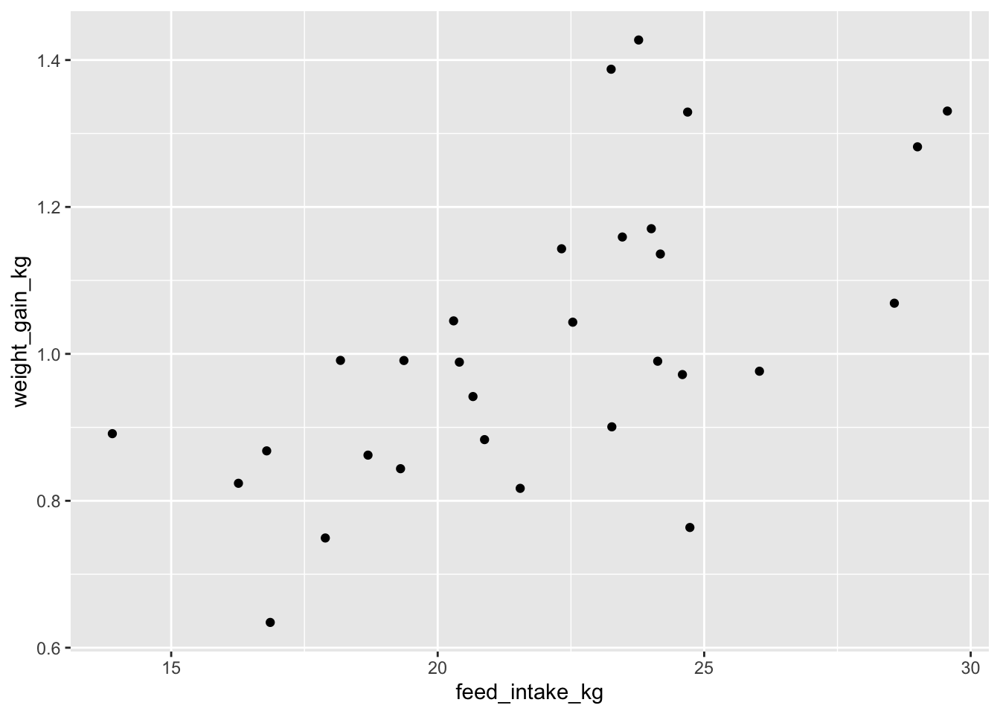
# With fixed aspect ratio
ggplot(cattle, aes(x = feed_intake_kg, y = weight_gain_kg)) +
geom_point() +
coord_fixed(ratio = 20) # 20 kg of feed = 1 kg weight gain visually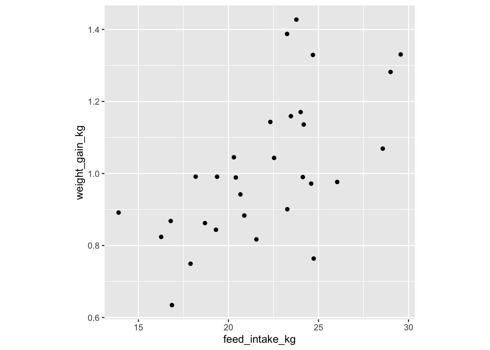
5.14 Saving Plots with ggsave()
After creating a plot, save it with ggsave():
# Create plot
my_plot <- ggplot(cattle, aes(x = feed_intake_kg, y = weight_gain_kg, color = breed)) +
geom_point(size = 3) +
labs(title = "Feed Intake vs Weight Gain") +
theme_minimal()
# Save to file
ggsave("cattle_plot.png", plot = my_plot, width = 8, height = 6, dpi = 300)5.14.1 Common Arguments
| Argument | What it does | Example |
|---|---|---|
filename |
File path and name | "plots/figure1.png" |
plot |
ggplot object (defaults to last plot) | my_plot |
width |
Width in inches (or cm, mm) | 8 |
height |
Height in inches (or cm, mm) | 6 |
dpi |
Resolution (dots per inch) | 300 (publication quality) |
units |
Units for width/height | "in", "cm", "mm" |
5.14.2 File Formats
ggplot2 supports many formats (determined by file extension):
- PNG (
.png) — Good for presentations, web (raster) - PDF (
.pdf) — Best for publications (vector, scalable) - JPEG (
.jpg) — Compressed (raster, smaller files) - SVG (
.svg) — Vector format for web - TIFF (
.tiff) — High quality (raster, large files)
# Save as PDF (recommended for publications)
ggsave("figure1.pdf", width = 7, height = 5)
# Save as high-resolution PNG
ggsave("figure1.png", width = 7, height = 5, dpi = 300)
TipPublication Guidelines
Most journals require: - 300 dpi minimum resolution - PDF or TIFF format for final submission - Specific dimensions (check journal guidelines) - Readable fonts (usually at least 8-10 pt in final figure)
Start with:
ggsave("figure.pdf", width = 7, height = 5, dpi = 300)5.15 Summary: Choosing the Right Plot Type
| Data Type | Goal | Recommended Plot |
|---|---|---|
| 2 continuous variables | Show relationship | Scatter plot (geom_point) |
| Time series | Show change over time | Line plot (geom_line) |
| Categorical + continuous | Compare groups | Bar chart (geom_col), Box plot (geom_boxplot) |
| 1 continuous variable | Show distribution | Histogram (geom_histogram), Density plot |
| Multiple groups + continuous | Compare distributions | Box plot (geom_boxplot), Violin plot (geom_violin) |
| Counts of categories | Show frequencies | Bar chart (geom_bar) |
5.15.1 Key Concepts Review
- Three essentials: Data +
aes()+geom_*() - Layers: Build plots by adding layers with
+ - Aesthetics: Map variables to visual properties (
aes()) - Geoms: Choose the right plot type for your data
- Scales: Control how data maps to visuals
- Labels: Always label axes and legends clearly (
labs()) - Themes: Customize appearance for publication
- Save: Use
ggsave()with appropriate format and resolution
5.16 Week 5 Homework: Creating Publication-Ready Plots
5.16.1 Assignment Overview
You will create 5 different types of plots from a provided dataset and present them in a professional Quarto report. Focus on choosing appropriate plot types, applying proper labels, and using themes effectively.
5.16.2 Dataset
You’ll use simulated data from a sheep grazing study:
# Generate dataset (include this in your homework)
set.seed(2024)
sheep_data <- tibble(
sheep_id = rep(1:60, each = 4),
breed = rep(rep(c("Merino", "Suffolk", "Dorper"), each = 20), each = 4),
pasture_type = rep(rep(c("Native", "Improved"), each = 30), each = 4),
week = rep(c(0, 4, 8, 12), times = 60),
weight_kg = rep(rnorm(60, mean = 45, sd = 5), each = 4) +
rep(c(0, 5, 9, 12), times = 60) +
rnorm(240, mean = 0, sd = 1.5),
wool_growth_mm = rep(rnorm(60, mean = 8, sd = 1.5), each = 4) +
rnorm(240, mean = 0, sd = 0.5)
)
# Add some additional variables
sheep_data <- sheep_data %>%
group_by(sheep_id) %>%
mutate(
weight_gain_kg = weight_kg - first(weight_kg),
avg_daily_gain_g = (weight_gain_kg * 1000) / (week * 7)
) %>%
ungroup() %>%
filter(week > 0) # Remove week 0 for some analyses5.16.3 Part 1: Scatter Plot (20 points)
Create a scatter plot showing the relationship between weight_kg (x-axis) and wool_growth_mm (y-axis).
Requirements: - Color points by breed - Set point size to 3 - Use theme_minimal() - Add appropriate title and axis labels - Include a subtitle indicating sample size
Bonus (+5 points): Add a trend line using geom_smooth(method = "lm") for each breed
5.16.4 Part 2: Line Plot (20 points)
Create a line plot showing weight_kg over week for individual sheep.
Requirements: - Show data for 6 randomly selected sheep (use filter(sheep_id %in% c(...))) - Color lines by breed - Add both lines and points - Use theme_classic() - Proper labels and title
5.16.5 Part 3: Bar Chart (20 points)
Create a bar chart showing the average final weight (week 12) by breed and pasture type.
Requirements: - Calculate average final weight using dplyr first - Use geom_col() with position = "dodge" for grouped bars - Fill bars by pasture_type - Add axis labels including units - Use a ColorBrewer palette
5.16.6 Part 4: Histogram (15 points)
Create histograms showing the distribution of avg_daily_gain_g for each breed.
Requirements: - Three separate histograms (one per breed) — hint: use faceting or create 3 separate plots - Choose appropriate binwidth - Fill color should differ by breed - Use theme_bw() - Title should be descriptive
Note: We’ll cover faceting (facet_wrap()) in the next chapter, but you can try it now or create 3 separate plots.
5.16.7 Part 5: Box Plot or Violin Plot (20 points)
Compare the distribution of weight_gain_kg (total gain over the study) across breeds and pasture types.
Requirements: - Use geom_boxplot() OR geom_violin() (your choice) - X-axis: breed, fill by pasture_type - Add jittered points with transparency - Use theme_light() - Clear labels and legend
5.16.8 Part 6: Interpretation (5 points)
For each plot, write 2-3 sentences interpreting what the plot shows. What patterns, trends, or differences do you observe?
5.16.9 Bonus Challenge (+10 points)
Create a single multi-panel figure combining your scatter plot and box plot using either: - Manual arrangement (creating two separate plots) - Looking ahead: Try library(patchwork) and combine with +
# Example structure (you'll learn this next week!)
library(patchwork)
plot1 + plot25.16.10 Submission Requirements
- Submit a rendered Quarto HTML document
- Include all code and output
- All plots should be clearly labeled
- Use professional formatting
- Include interpretations
5.16.11 Recommended YAML
---
title: "Week 5 Homework: Data Visualization with ggplot2"
author: "Your Name"
date: today
format:
html:
toc: true
toc-depth: 2
code-fold: false
theme: cosmo
embed-resources: true
execute:
warning: false
message: false
---5.16.12 Grading Rubric
- Part 1: Scatter Plot (20%)
- Correct geom and aesthetics (8%)
- Proper labels and theme (7%)
- Overall appearance (5%)
- Part 2: Line Plot (20%)
- Correct data filtering and plotting (8%)
- Lines and points shown (7%)
- Labels and styling (5%)
- Part 3: Bar Chart (20%)
- Correct data summarization (8%)
- Grouped bars correctly displayed (7%)
- Labels and color palette (5%)
- Part 4: Histogram (15%)
- Appropriate binwidth chosen (6%)
- One histogram per breed (5%)
- Labels and theme (4%)
- Part 5: Box/Violin Plot (20%)
- Correct plot with multiple groupings (8%)
- Points added with transparency (7%)
- Labels and theme (5%)
- Part 6: Interpretation (5%)
- Clear, accurate interpretations for each plot
5.17 Additional Resources
5.17.1 Required Reading
- R for Data Science (2e) - Chapters 9-10: Visualize and Layers
- ggplot2 documentation
- ggplot2 book (3e) - Chapters 1-4
5.17.2 Optional Reading
- Wilkinson, L. (2005). The Grammar of Graphics (2nd ed.). Springer. (Original theory)
- Wickham, H. (2010). “A Layered Grammar of Graphics.” Journal of Computational and Graphical Statistics, 19(1), 3-28.
- Data Visualization: A Practical Introduction by Kieran Healy
5.17.3 Videos
- “ggplot2 Workshop” by Thomas Lin Pedersen (RStudio)
- “A Quick Introduction to ggplot2” by StatQuest with Josh Starmer
- “ggplot2 Tutorial” series by Data Science Dojo
5.17.4 Cheat Sheets
- ggplot2 Cheat Sheet ⭐ Most important!
- RStudio Cheatsheets Collection
5.17.5 Galleries and Inspiration
- R Graph Gallery — Hundreds of examples with code
- Top 50 ggplot2 Visualizations
- ggplot2 extensions — Additional packages
5.17.6 Color Resources
- ColorBrewer — Color schemes for maps and data viz
- Viridis color palettes — Colorblind-friendly
- Coolors — Color palette generator
5.17.7 Interactive Learning
5.17.8 Useful Websites
Next Chapter: Advanced ggplot2 and Multi-Panel Plots